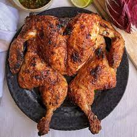

Pollo en Miel

Descripcion del Pollo
Ingredientes
- pollo
- cebolla
- consome
- miel obviamente
Pasos a Seguir para el pollo en Miel
- Lo primero es sacar de la bolsa es los frijoles.
- Tambien hay que lavar los frijoles ya que pues vienen sucios desde el campo con todos los fertilizantes.
- Luego hay que sofreir los frijoles con la cebolla y ajo para que se vayan aromatizando todos los aromas
- Por ultimo debemos pegarle a la pana y comer de los frjoles con unos totopos bien fritos y un quesito que grantine asi ricooo.